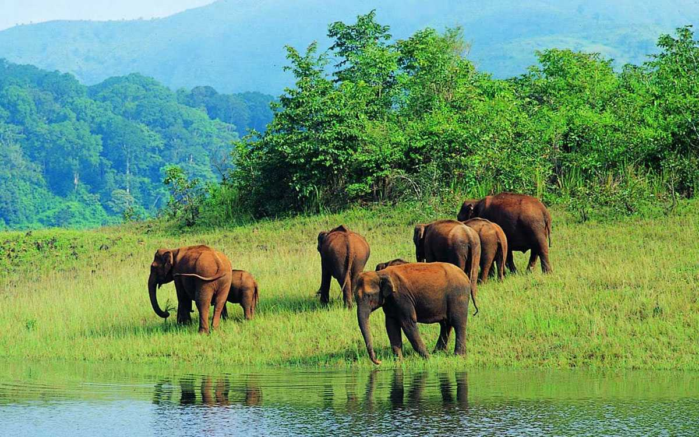
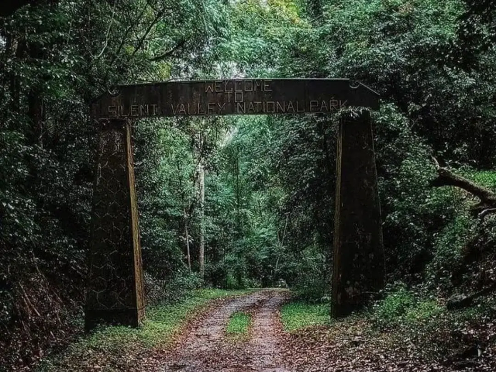
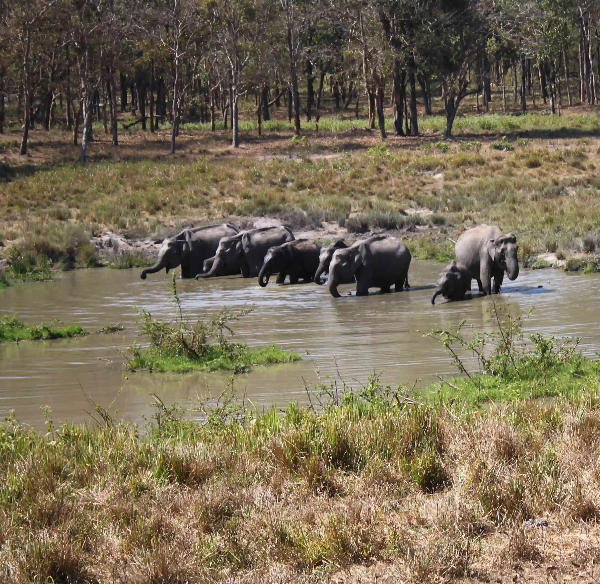
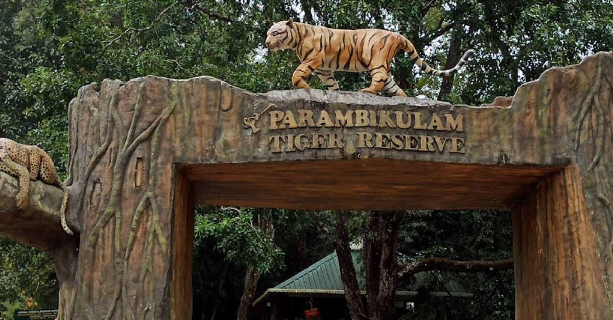
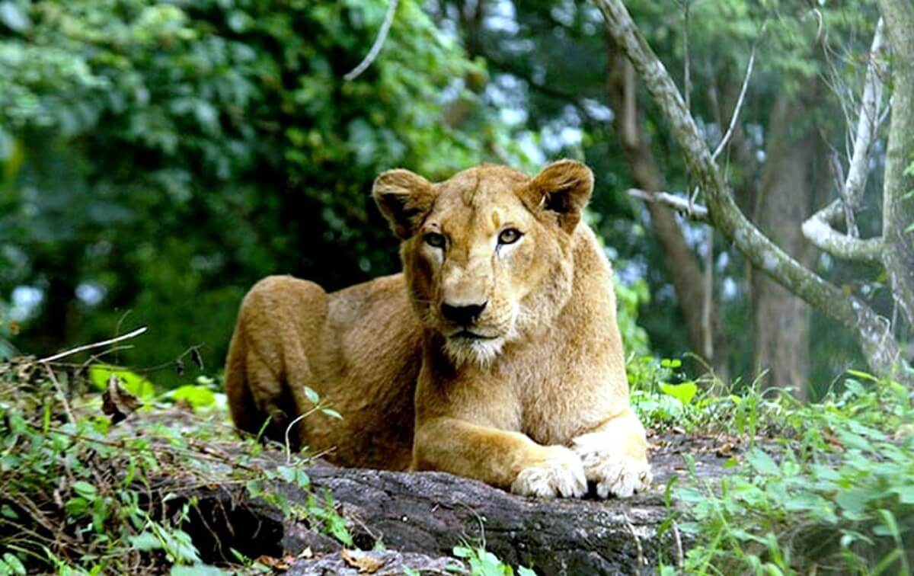
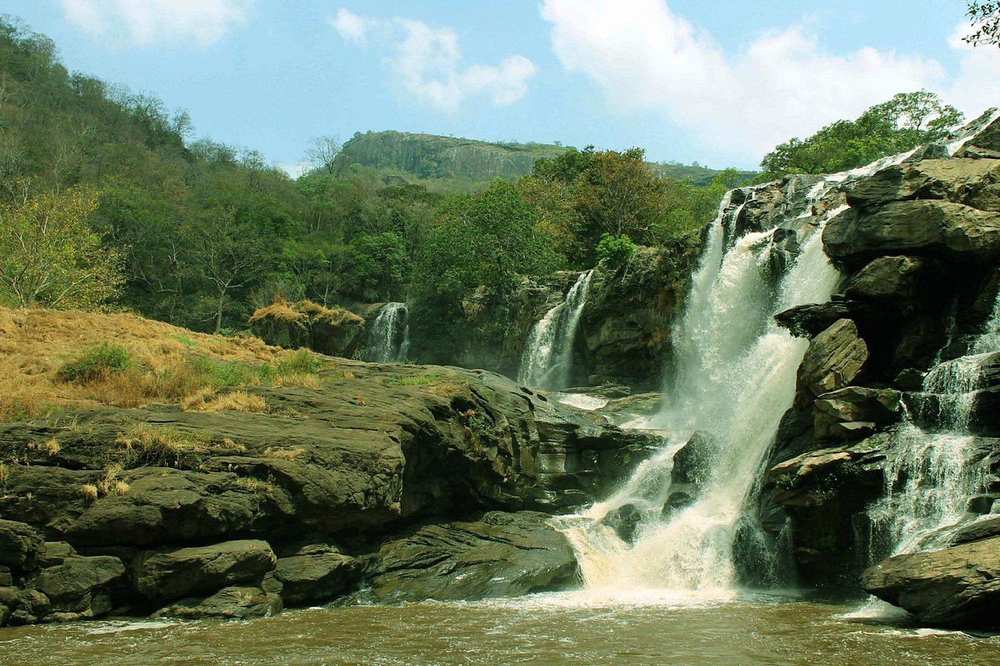
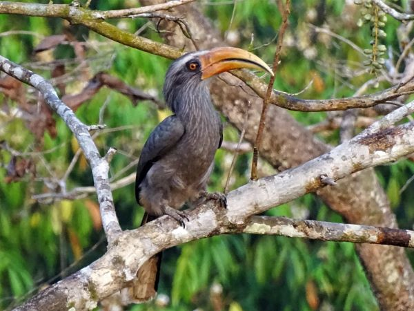

Periyar Wildlife Sanctuary
Established in 1934 to protect wildlife, especially elephants.
Timing: 6:00 AM - 6:00 PM
Entry fee: rs.45 (Adults)
Nearby Restaurants:
- Bamboo Cafe
- Ebony's Cafe

Silent Valley National Park
Timing:7:00 AM - 5:00 PM
Entry Fee:rs.110
Part of Nilgiri Biosphere Reserve.
Nearby Restaurants:
- Wilton Restaurant
- Udupi Restaurant

Wayanad Wildlife Sanctuary
Timing:8:00 AM - 1:00 PM
Entry Fee:rs.50 (Adults)
Silent Valley is one of the last undisturbed rainforests in India, known for rare species.
Nearby Restaurants:
- Local restaurants in Mannarkkad

Parambikulam Tiger Reserve
Timing:7:00 AM - 5:00 PM
Entry Fee:rs.100
Declared tiger reserve to conserve biodiversity.
Nearby Restaurants:
- Forest Canteen

Neyyar Wildlife Sanctuary
Timing:9:00 AM - 5:00 PM
Entry Fee:rs.20
Formed around Neyyar Dam region.
Nearby Restaurants:
- KTDC Restaurant

Chinnar Wildlife Sanctuary
Timing:8:00 AM - 5:00 PM
Entry Fee:rs.10
Known for dry deciduous forest ecosystem.
Nearby Restaurants:
- Local hotels in Marayoor

Thattekad Bird Sanctuary
Timing:7:00 AM - 5:00 PM
Entry Fee:rs.30
First bird sanctuary in Kerala.
Nearby Restaurants:
- Local cafes near Kothamangalam

Kulathupuzha Forest Museum
Timing:10:00 AM - 6:00 PM
Entry Fee:rs.30
Kerala's first forest museum showcasing biodiversity.
Nearby Restaurants:
- Local hotels in Kollam